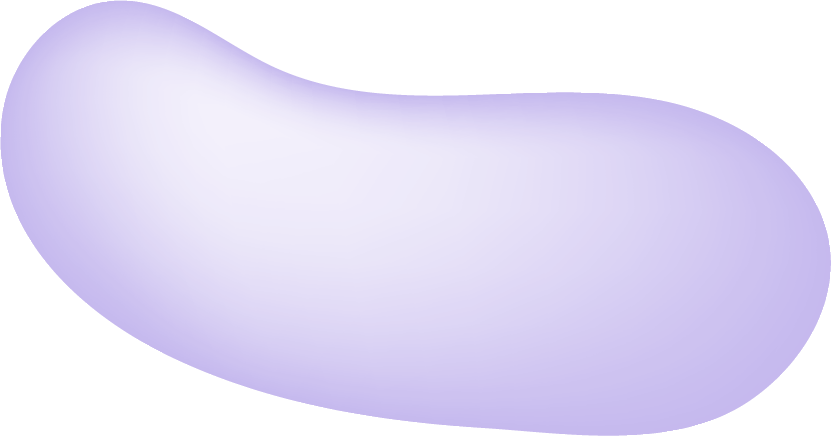

Learning CSS Properties
Element Positioning

Positioning Types
static, relative, absolute, fixed, sticky
Utilize various positioning types (static, relative, absolute, fixed, sticky) on different elements
Understanding CSS Positioning CSS positioning is a fundamental concept that allows you to precisely control the placement of elements on a web page. By default, all HTML elements have a position value of static, meaning they render in the normal document flow, one after another, as if no special positioning rules are applied. However, when you need elements to overlap, stay in place while scrolling, or be positioned relative to their parent or the viewport, you'll turn to other position values. Each value dramatically alters how an element behaves in the layout, moving it out of the normal flow or giving it special spatial relationships, often in conjunction with offset properties like top, bottom, left, and right. Mastering these position types is crucial for creating complex and dynamic web interfaces.
Exploring relative, absolute, and fixed Positioning When you set an element's position to relative, it remains in the normal document flow but can then be offset from its original position using top, bottom, left, or right. Crucially, other elements on the page will still act as if the relative element is in its original place, potentially leaving gaps. In contrast, absolute positioning takes an element entirely out of the normal flow. It's then positioned relative to its nearest positioned ancestor (any ancestor with a position other than static) or, failing that, the initial containing block. This allows for precise placement and overlapping. fixed positioning is similar to absolute in that it's out of the normal flow, but it's always positioned relative to the viewport. This means a fixed element will stay in the same place on the screen even when the user scrolls, making it ideal for navigation bars or "back to top" buttons.
Differentiating fixed and sticky Positioning While both fixed and sticky positioning involve elements staying in place, they operate under different conditions. A fixed element is always anchored to the viewport; it pays no attention to its parent container's scroll position or the rest of the document flow once placed. It simply stays put on the screen. A sticky element, however, is a hybrid. It behaves like a relative element within its parent until it hits a specified offset (e.g., top: 0) during scrolling. Once that threshold is met, it becomes "stuck" to that position (like fixed) relative to the viewport. It will remain stuck until its parent container is no longer visible in the viewport, at which point it reverts to its relative behavior. This makes sticky ideal for elements like section headers that you want to scroll with content initially, then become fixed at the top of the screen as the user scrolls past them, only to disappear once their associated section scrolls out of view.
Differentiating fixed and sticky Positioning While both fixed and sticky positioning involve elements staying in place, they operate under different conditions. A fixed element is always anchored to the viewport; it pays no attention to its parent container's scroll position or the rest of the document flow once placed. It simply stays put on the screen. A sticky element, however, is a hybrid. It behaves like a relative element within its parent until it hits a specified offset (e.g., top: 0) during scrolling. Once that threshold is met, it becomes "stuck" to that position (like fixed) relative to the viewport. It will remain stuck until its parent container is no longer visible in the viewport, at which point it reverts to its relative behavior. This makes sticky ideal for elements like section headers that you want to scroll with content initially, then become fixed at the top of the screen as the user scrolls past them, only to disappear once their associated section scrolls out of view.
Differentiating fixed and sticky Positioning While both fixed and sticky positioning involve elements staying in place, they operate under different conditions. A fixed element is always anchored to the viewport; it pays no attention to its parent container's scroll position or the rest of the document flow once placed. It simply stays put on the screen. A sticky element, however, is a hybrid. It behaves like a relative element within its parent until it hits a specified offset (e.g., top: 0) during scrolling. Once that threshold is met, it becomes "stuck" to that position (like fixed) relative to the viewport. It will remain stuck until its parent container is no longer visible in the viewport, at which point it reverts to its relative behavior. This makes sticky ideal for elements like section headers that you want to scroll with content initially, then become fixed at the top of the screen as the user scrolls past them, only to disappear once their associated section scrolls out of view.
Differentiating fixed and sticky Positioning While both fixed and sticky positioning involve elements staying in place, they operate under different conditions. A fixed element is always anchored to the viewport; it pays no attention to its parent container's scroll position or the rest of the document flow once placed. It simply stays put on the screen. A sticky element, however, is a hybrid. It behaves like a relative element within its parent until it hits a specified offset (e.g., top: 0) during scrolling. Once that threshold is met, it becomes "stuck" to that position (like fixed) relative to the viewport. It will remain stuck until its parent container is no longer visible in the viewport, at which point it reverts to its relative behavior. This makes sticky ideal for elements like section headers that you want to scroll with content initially, then become fixed at the top of the screen as the user scrolls past them, only to disappear once their associated section scrolls out of view.
Differentiating fixed and sticky Positioning While both fixed and sticky positioning involve elements staying in place, they operate under different conditions. A fixed element is always anchored to the viewport; it pays no attention to its parent container's scroll position or the rest of the document flow once placed. It simply stays put on the screen. A sticky element, however, is a hybrid. It behaves like a relative element within its parent until it hits a specified offset (e.g., top: 0) during scrolling. Once that threshold is met, it becomes "stuck" to that position (like fixed) relative to the viewport. It will remain stuck until its parent container is no longer visible in the viewport, at which point it reverts to its relative behavior. This makes sticky ideal for elements like section headers that you want to scroll with content initially, then become fixed at the top of the screen as the user scrolls past them, only to disappear once their associated section scrolls out of view.
Absolute
Fixed